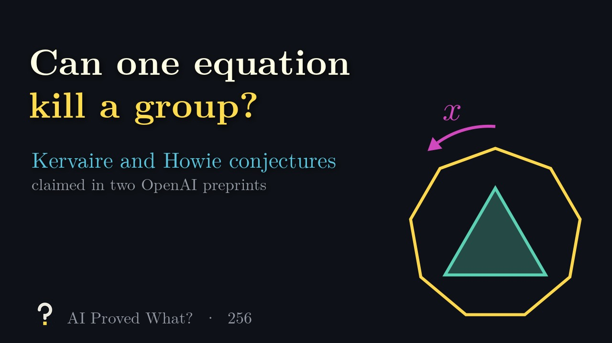
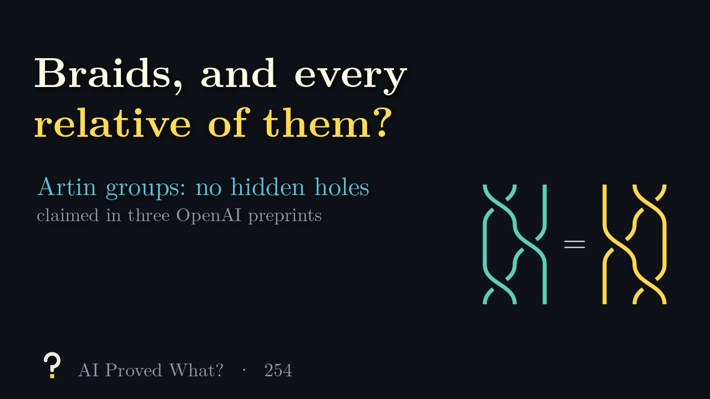
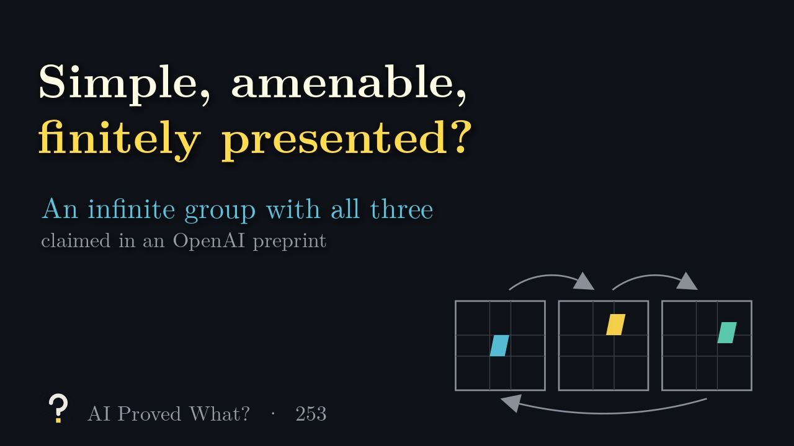
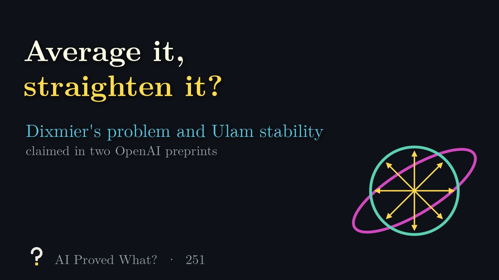
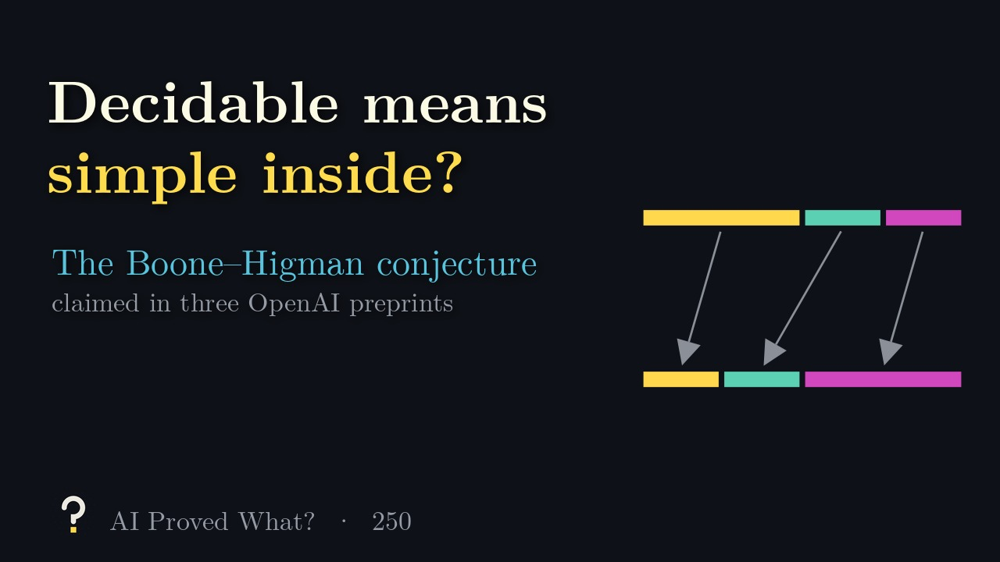

An AI system says some hyperbolic group has no geometric action on any CAT(0) space, answering Gromov’s question whether every hyperbolic group acts on a negatively curved space.
What does that even mean, and has anyone checked? Each episode takes one claim like this, builds the intuition with animation, and keeps a running record of how far the proof has been verified.
Episode 257: Hyperbolic, but never CAT(0)?, about 4 minutes.
Where this claim stands
- Posted as a preprint
- OpenAI, September 25, 2026
- Peer reviewed
- Not yet
- Checked in Lean
- OpenAI published a Lean proof of the main theorem (scope notes)
Last checked October 17, 2026. The claim has not been withdrawn. One unrefereed OpenAI preprint; the group is not explicit; the main statement is formalized in Lean, without two of its clauses.
Recent episodes
- Episode 257 · 4:25 Hyperbolic, but never CAT(0)? An AI preprint claims a hyperbolic group with no geometric CAT(0) action, answering a question of Gromov
-

Episode 256 · 5:16 Can one equation kill a group? Two AI preprints claim Kervaire’s conjecture and Howie’s conjecture on equations over groups -
 Episode 255 · 5:02
Seen from far away, still polycyclic?
An AI preprint claims the Eskin–Fisher–Whyte conjecture on quasi-isometric recognition
Episode 255 · 5:02
Seen from far away, still polycyclic?
An AI preprint claims the Eskin–Fisher–Whyte conjecture on quasi-isometric recognition
-

Episode 254 · 5:00 Braids, and every relative of them? Three AI preprints claim the Artin K(π,1) conjecture, parabolic intersections, and a non-CAT(0) Artin group -

Episode 253 · 4:13 Simple, amenable, finitely presented? An AI preprint claims an infinite group with all three properties -
 Episode 252 · 5:08
Curved, yet hidden from finite shadows?
An AI preprint claims a torsion-free hyperbolic group that is not residually finite
Episode 252 · 5:08
Curved, yet hidden from finite shadows?
An AI preprint claims a torsion-free hyperbolic group that is not residually finite
-

Episode 251 · 4:36 Average it, straighten it? Two AI preprints claim Dixmier’s problem for discrete groups and strong Ulam stability for countable groups -

Episode 250 · 4:46 Decidable means simple inside? Three AI preprints claim the Boone–Higman conjecture, with higher finiteness
Browse by subject
- Number theory31 of 31 explained
- Algebraic and complex geometry36 of 36 explained
- Real and complex analysis16 of 16 explained
- Convex and metric geometry15 of 15 explained
- Theoretical computer science40 of 40 explained
- Dynamical systems and ergodic theory12 of 12 explained
- Combinatorics37 of 37 explained
- Algebra18 of 18 explained
- Probability and statistical mechanics29 of 29 explained
- Mathematical logic6 of 6 explained
- Group theory12 of 14 explained
- Mathematical physics0 of 25 explained
- Operator algebras0 of 19 explained
- Topology0 of 18 explained
- Functional analysis0 of 11 explained
- Differential geometry0 of 29 explained
- Partial differential equations0 of 16 explained
Progress
- Explained
- 252 of 372 results (719 papers in all)
- Lean proof published by OpenAI
- 242 of 372 results: 177 of the main theorem, 65 of part of the claim
- Peer reviewed
- 0 as of October 17, 2026
OpenAI’s 719 papers are grouped into 372 results. A result is one main claim plus any companion papers, such as alternative proofs, supporting results or consequences, and each episode explains one whole result, all of its papers included.
How to read the record
Every claim gets the same three steps. A filled gold box means a step has happened; an empty box means it hasn’t yet.
- Posted as a preprint
- The proof is public
- Peer reviewed
- Refereed by mathematicians
- Checked in Lean
- Verified step by step by computer
Posted as a preprint means the lab has released a written proof anyone can read. That’s where a claim starts, not where it ends. Peer reviewed means independent mathematicians have refereed it, usually for a journal. Checked in Lean means the main result has been verified by Lean, a computer program that accepts a proof only when every step is justified.
When OpenAI’s published Lean proof covers only part of a claim, the box stays empty and the record says so. In lists, a half-filled box marks these.
If a claim is withdrawn, its box turns red and the episode stays up, clearly marked. Mistakes are part of the story.